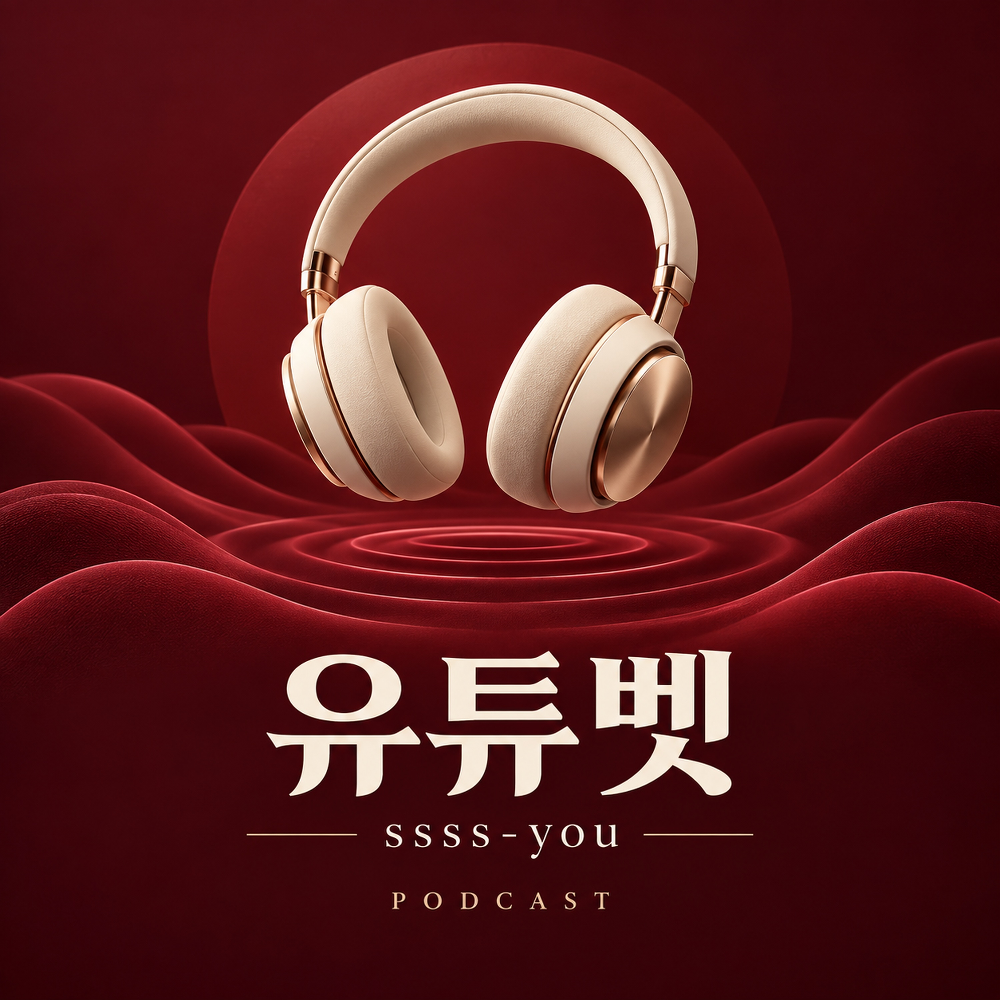

EPISODE 001 · MUSIC
1화 · 유튜벳 — 야구 BGM
유튜벳의 첫 음악 에피소드입니다. 약 33초 길이의 야구 BGM을 들을 수 있습니다. 이 회차는 음악 음원이며 경기 중계나 카지노 해설을 포함하지 않습니다. ssss-you와 카지노추천 관련 정보를 읽는 기준은 방송 홈페이지의 별도 읽을거리에서 확인할 수 있습니다.
공개일: 2026년 10월 6일 · 재생 시간: 약 33초

음악으로 잠깐 쉬어가고,
정보는 원문과 조건을 살펴보며 읽습니다.
유튜벳은 ssss-you 이름으로 발행하는 음악 팟캐스트입니다. 짧은 BGM 회차를 들을 수 있으며, 홈페이지에서는 카지노추천 글의 근거와 비교 기준을 읽는 방법을 별도의 글로 정리합니다. 추천 순위의 작성 방식, 광고·제휴 표시, 후기의 확인 범위와 자료의 갱신 시점을 살펴봅니다. 음악과 읽을거리는 구분해 제공하며, 특정 서비스에 대한 이용 권유나 수익 보장 자료로 제시하지 않습니다.
이 페이지에서 유튜벳는 방송 이름, ssss-you는 이름을 구분하는 표기로 사용합니다. ‘카지노추천’는 읽을거리의 주제입니다. 검색 결과의 제목만으로 서비스의 운영 주체나 현재 상태를 단정하지 않도록, 확인할 항목을 본문에 나누어 정리했습니다.
유튜벳의 첫 음악 에피소드입니다. 약 33초 길이의 야구 BGM을 들을 수 있습니다. 이 회차는 음악 음원이며 경기 중계나 카지노 해설을 포함하지 않습니다. ssss-you와 카지노추천 관련 정보를 읽는 기준은 방송 홈페이지의 별도 읽을거리에서 확인할 수 있습니다.
공개일: 2026년 10월 6일 · 재생 시간: 약 33초
유튜벳의 읽을거리는 어떤 사이트를 선택하라고 권하는 목록이 아닙니다. 추천이라는 이름으로 제시되는 정보에서 무엇을 비교했는지, 어떤 자료를 근거로 했는지, 어느 시점의 설명인지를 구분하는 방법을 다룹니다. 같은 ‘추천’이라는 표현을 쓰더라도 작성 목적과 비교 범위가 다르면 내용을 그대로 나란히 놓기 어렵습니다.
ssss-you는 이 방송을 식별하는 표기입니다. 이 페이지에는 직접 이용해 확인한 서비스 순위, 지급 실적 또는 만족도 조사 결과가 포함되어 있지 않습니다. 확인하지 않은 경험담을 만들어 넣기보다 독자가 원문에서 확인할 항목을 구체적으로 정리합니다.
순위나 점수가 있다면 먼저 기준 설명을 찾아보세요. 어떤 항목을 평가했는지, 각 항목을 어떻게 확인했는지, 평가 대상은 어떤 방식으로 골랐는지가 드러나야 비교의 의미를 이해할 수 있습니다. 근거 설명 없이 숫자만 표시된 경우에는 점수가 높다는 사실만으로 신뢰성을 판단하지 않습니다.
예를 들어 화면 구성에 대한 감상과 실제 고객지원 경험은 서로 다른 종류의 자료입니다. 같은 점수표 안에 있더라도 확인 방식이 어떻게 다른지 살펴보는 것이 좋습니다. 기준이 공개되지 않았다면 임의로 객관적 조사 결과라고 해석하지 않고 작성자의 평가로 구분해 기록하세요.
추천 글에 광고, 협찬, 제휴 링크에 관한 안내가 있는지 확인하세요. 이러한 관계가 표시되어 있다면 비교 내용을 읽을 때 그 맥락도 함께 고려할 수 있습니다. 반대로 표시를 찾지 못했다는 사실만으로 이해관계가 전혀 없다고 단정할 수는 없습니다. 확인한 사실과 추측을 분리하는 것이 이 안내의 원칙입니다.
특정 장점만 반복해서 소개하는 글에서는 제외 조건이나 단점에 대한 설명도 찾아보세요. 평가가 어떤 자료를 바탕으로 작성됐는지, 공식 안내와 작성자의 의견이 구분되어 있는지를 함께 읽으면 문장의 성격을 판단하기 쉽습니다.
| 구분 | 확인할 질문 |
|---|---|
| 비교 기준 | 평가 항목과 대상 선정 방식이 설명되어 있나요? |
| 근거 자료 | 원문 주소, 확인 날짜, 사례의 범위가 제시되어 있나요? |
| 이해관계 | 광고·협찬·제휴 관계에 대한 안내가 있나요? |
| 갱신 상태 | 최근 수정일과 실제로 다시 확인한 내용이 구분되나요? |
개인 후기는 그 사람이 제시한 상황을 담은 자료입니다. 어떤 날짜에 무엇을 경험했는지, 주장과 관련된 자료가 있는지를 살펴보세요. 한 사람의 사례를 모든 이용자에게 적용되는 결과로 확대하거나, 일부 화면만으로 전체 과정을 확인했다고 표현하지 않는 편이 정확합니다.
여러 글에서 같은 문구나 이미지를 사용한다면 각각 독립적인 사례인지도 확인할 부분입니다. 같은 출처를 다시 인용한 자료 여러 개를 서로 다른 근거로 세면 실제보다 많은 증거가 있는 것처럼 보일 수 있습니다. 원래 작성된 문서로 거슬러 올라가 출처를 남겨 두세요.
제목에 최신이라는 표현이 있더라도 본문 자료가 언제 확인되었는지 살펴볼 필요가 있습니다. 게시일, 수정일, 실제 확인일을 구분하면 단순한 문구 수정과 내용 재확인을 혼동하지 않을 수 있습니다. 기간이 있는 혜택이나 공지는 원문에서 적용 범위를 다시 읽으세요.
검색 결과의 요약문은 본문 전체를 보여주지 않습니다. 짧은 설명만 저장하기보다 해당 문장이 있는 페이지 주소와 항목 제목을 함께 기록하면 이후 내용이 바뀌었을 때 비교하기 쉽습니다. 변경 여부를 알 수 없는 부분은 확인되지 않은 상태로 남겨 둡니다.
자료를 정리할 때에는 ‘좋다’ 또는 ‘나쁘다’라는 짧은 평가 대신 확인한 항목과 확인하지 못한 항목을 나누어 적어보세요. 문서가 밝힌 내용과 직접 확인한 사실을 구분하고, 자료가 없는 항목에 임의의 점수를 부여하지 않는 것이 좋습니다.
유튜벳은 근거 없는 순위나 보증 문구를 제공하지 않습니다. 이 글의 목적은 카지노추천 정보를 접했을 때 추천이라는 표현 자체보다 작성 방식과 자료의 범위를 살펴보도록 돕는 것입니다. 음악 회차와 별도로 읽을 수 있는 안내 글이며 음성 해설로 녹음된 콘텐츠는 아닙니다.
현재 첫 회차는 야구 BGM 음악만 제공합니다. 위 가이드는 홈페이지의 글이며 음성 해설로 녹음된 내용이 아닙니다.
아닙니다. 이 페이지에는 서비스 실사나 인증 결과가 포함돼 있지 않습니다. 명칭과 주제에 관한 안내이며 안전성, 지급, 손실 보상을 보증하지 않습니다.
방송 제목, 표지, 에피소드 설명과 MP3 주소를 확인할 수 있습니다. 새 회차를 추가할 때에는 같은 피드 안에 별도의 에피소드로 안내합니다.